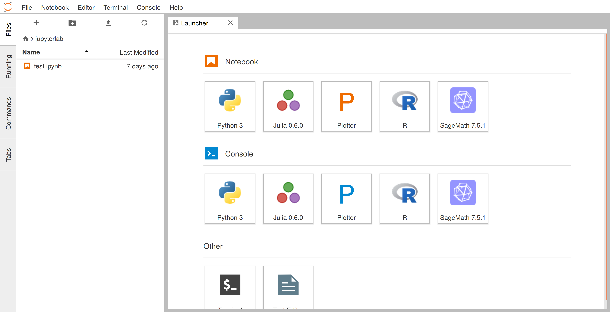

JupyterHub verwaltet, wann und auf welcher Work-Node ein JupyterLab-Container gestartet werden sollte. In diesem Abschnitt betrachten wir JupyterLab genauer. Die Abbildung unten zeigt die typische JupyterLab-Umgebung, die eine leicht zugängliche Programmierumgebung direkt im Browser bietet.
Allerdings gibt es Unterschiede zwischen verschiedenen JupyterLab-Images, da unterschiedliche Kurse andere Abhängigkeiten oder Software-Bibliotheken in JupyterLab erfordern könnten. Daher ist es notwendig, ein eigenes JupyterLab-Image zu konfigurieren, um alle benötigten Bibliotheken zu installieren. Dafür wird ein Dockerfile benötigt, mit dem die Abhängigkeiten beschrieben werden. In diesem Abschnitt erfahren Sie, wie man ein eigenes JupyterLab-Image mit Hilfe eines Dockerfiles erstellt.
Hinweis: Wenn keine speziellen Bibliotheken erforderlich sind, können Sie das Standard-Image verwenden. In diesem Fall können Sie diesen Schritt überspringen und direkt zu Schritt 8 gehen.
Dieses Abschnitt gliedert sich in folgende Abschnitte: